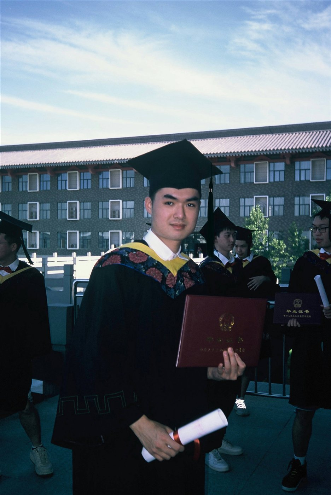
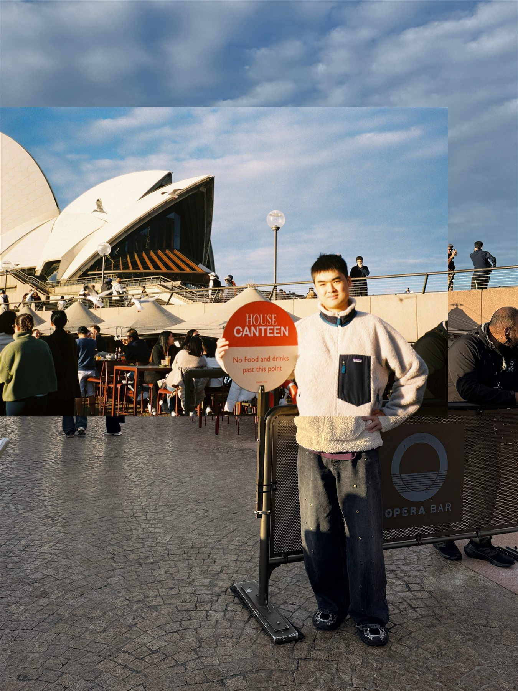

01
2024.05 — 2024.06
资产管理部实习生
陕西庆华汽车安全系统有限公司 · 西安
协同推进厂房建设与设施改造项目，参与现场巡检、施工记录与项目进度跟踪，并整理财务数据支持预算与成本分析。
PROJECT MANAGEMENT · DELIVERY · COLLABORATION
我是宋子豪，项目管理硕士在读，拥有土木工程现场与跨团队协同经验。善于需求梳理、进度跟踪、风险识别，也持续用 AI 工具提升分析与交付效率。

M.P.M. · ADELAIDE CIVIL ENGINEERING → PM工程背景
项目视角
从施工现场的进度、质量与安全，到研究生阶段的项目计划、采购合同与领导力，我在实践与方法论之间持续搭桥。面对不确定任务，我习惯先明确目标和边界，再推动信息同步、问题闭环与结果交付。
需求梳理、项目计划、资源协调、进度跟踪与复盘总结。
能与施工、工程、资产和管理团队沟通，把问题转化为可执行动作。
熟练使用 ChatGPT、Codex 与 Office，快速探索方案、校验信息与输出成果。
从现场问题到项目闭环
陕西庆华汽车安全系统有限公司 · 西安
协同推进厂房建设与设施改造项目，参与现场巡检、施工记录与项目进度跟踪，并整理财务数据支持预算与成本分析。
中国华西企业有限公司西安分公司 · 西安
参与住宅项目施工策划及日常现场管理，协调不同作业区域；检查进度与工程质量，编制和维护施工记录。
中交建筑集团有限公司 · 天津
协助建筑开发项目现场团队开展施工组织与协调，跟进日常进度、检查成果并推动问题反馈更新。
工程底座 × 管理方法论
项目管理硕士
项目控制方法、项目采购与合同管理、项目管理基础、项目领导力、研究方法与开发
土木工程工学学士
钢筋混凝土结构设计、岩土工程、结构力学、土木工程施工
需求梳理 · 项目计划 · 资源协调 · 进度跟踪 · 风险识别 · 复盘总结
ChatGPT · Codex · Microsoft Office · LaTeX · AutoCAD · Adobe
利益相关方沟通 · 团队协作 · 组织协调 · 问题解决 · 时间管理

足球、篮球、羽毛球、长跑和游泳，让我习惯在团队里找到自己的位置，也让我在长周期目标中保持节奏。
在中国与澳大利亚的学习和生活经历，则让我更愿意理解不同视角，并把清晰、真诚的沟通放在协作的第一位。